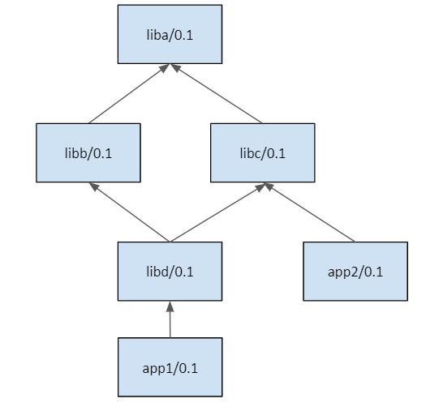

Build order in lockfiles
Warning
This is an experimental feature subject to breaking changes in future releases.
In this section we are going to use the following packages, defining this dependency graph.
{kind=link}
Note
The code used in this section, including a build.py script to reproduce it, is in the examples repository: https://github.com/conan-io/examples. You can go step by step reproducing this example while reading the below documentation.
$ git clone https://github.com/conan-io/examples.git
$ cd features/lockfiles/build_order
# $ python build.py only to run the full example, but better go step by step
The example in this section uses full_version_mode, that is, if a package changes any part of its version, its consumers will
need to build a new binary because a new package_id will be computed. This example will use version ranges, and
it is not necessary to have revisions enabled. It also do not require a server, everything can be reproduced locally.
$ conan config set general.default_package_id_mode=full_version_mode
Let’s start by creating the initial dependency graph, without binaries (just the exported recipes), in our local cache:
$ conan export liba liba/0.1@user/testing
$ conan export libb libb/0.1@user/testing
$ conan export libc libc/0.1@user/testing
$ conan export libd libd/0.1@user/testing
$ conan export app1 app1/0.1@user/testing
$ conan export app2 app2/0.1@user/testing
Now we will create a lockfile that captures the dependency graph for app1/0.1@user/testing.
In the same way we created lockfiles for a local conanfile.py in a user folder, we can also
create a lockfile for a recipe in the Conan cache, with the --reference argument:
$ conan lock create --reference=app1/0.1@user/testing --lockfile-out=app1.lock
The resulting app1.lock lockfile will not be able to completely lock the binaries because such
binaries do not exist at all. This can be checked in the app1.lock file, the packages do not
contain a package revision (prev) field at all:
{
...
"4": {
"ref": "liba/0.1@user/testing",
"options": "",
"package_id": "5ab84d6acfe1f23c4fae0ab88f26e3a396351ac9",
"context": "host"
}
...
}
We can now compute the “build-order” of the dependency graph. The “build-order” lists in order all the packages that needs to be built from sources. The logic is the following:
If a package is fully locked (it contains a package revision field
previn the lockfile), it will not be built from sources and will never appear in the build-order list.If a package is not fully locked (it does not contain a package revision
previn the lockfile), it will appear in the build-order list. This situation happens both when the package binary doesn’t exist yet, or when the--buildargument was used while creating the lockfile.
$ conan lock build-order app1.lock --json=build_order.json
The resulting build_order.json file is a list of lists, structured by levels of possible parallel builds:
[
# First level liba
[["liba/0.1@user/testing", "5ab8...1ac9", "host", "4"]],
# Second level libb and libc
[["libb/0.1@user/testing", "cfd1...ec23", "host", "3"],
["libc/0.1@user/testing", "cfd1...ec23", "host", "5"]],
# Third level libd
[["libd/0.1@user/testing", "d075...5b9d", "host", "2"]],
# Fourth level libd
[["app1/0.1@user/testing", "3bf2...5188", "host", "1"]]
]
Every item in the outer list is a “level” in the graph, a set of packages that needs to be built, and
are independent of every other package in the level, so they can be built in parallel. Levels in the
build order must be respected, as the second level cannot be built until all the packages in the first level are built
and so on. In this example, once the build of liba/0.1@user/testing finishes, as it is the only
item in the first level, the second level can start, and it can build both libb/0.1@user/testing and libc/0.1@user/testing in parallel. It is necessary
that both of them finish their build to be able to continue to the third level, that contains
libd/0.1@user/testing, because this package depends on them.
Every item in each level has 4 elements: [ref, package_id, context, id]. At the moment the only
necessary one is the first one. The ref value is the one that can be used for example in a conan install
command like:
$ conan install <ref> --build=<ref> --lockfile=mylock.lock
Defining builds
The definition of what needs to be built comes from the existing binaries plus the --build argument in the conan lock create.
Let’s build all the binaries for the exported packages first:
# Build app1 and dependencies
$ conan install app1/0.1@user/testing --build=missing
Now that there are binaries for all packages in the cache, let’s capture the in a new lockfile and compute the build order:
# Create a new lockfile now with all the package binaries
$ conan lock create --reference=app1/0.1@user/testing --lockfile-out=app1.lock
# And check which one needs to be built
$ conan lock build-order app1.lock --json=build_order.json
# The build order is emtpy, nothing to build
[]
The result of this build order is empty. As the conan lock create found existing binaries, everything is fully locked, nothing needs to be built.
If we specify the --build flag, then the behavior is different:
$ conan lock create --reference=app1/0.1@user/testing --lockfile-out=app1.lock --build
# the lockfile will not lock the binaries
# And check which one needs to be built
$ conan lock build-order app1.lock --json=build_order.json
[[["liba/0.1@user/testing", "5ab8...1ac9", "host", "4"]], ...
This feature is powerful when combined with package_id_modes, because it can
automatically define the minimum set of packages that needs to be built for any
change in the dependency graph.
Let’s say that a new version libb/1.1@user/testing is created. But if we
check the libd conanfile.py requirement libb/[>0.0 <1.0]@user/testing,
we can see that this 1.1 version falls outside of the valid version range.
Then, it does not affect libd or app1 and nothing needs to be built:
$ conan create libb libb/1.1@user/testing
$ conan lock create --reference=app1/0.1@user/testing --lockfile-out=app1.lock
$ conan lock build-order app1.lock --json=build_order.json
[] # Empty, nothing to build, libb/1.1 does not become part of app1
If on the contrary, a new libb/0.2@user/testing is created, and we capture a
new lockfile, it will contain such new version. Other packages, like liba and
libc are not affected by this new version, and will be fully locked in the lockfile,
but the dependents of libb now won’t be locked and it will be necessary to build them:
$ conan create libb libb/0.2@user/testing
$ conan lock create --reference=app1/0.1@user/testing --lockfile-out=app1.lock
$ conan lock build-order app1.lock --json=build_order.json
[[['libd/0.1@user/testing', '97e9...b7f4', 'host', '2']],
[['app1/0.1@user/testing', '2bf1...e405', 'host', '1']]]
So in this case the app1.lock is doing these things:
Fully locking the non-affected packages (
liba/0.1,libc/0.1)Fully locking the
libb/0.2, as the binary that was just created is valid for ourapp1(Note that this might not always be true, andapp1build could require a differentlibb/0.2binary).Partial locking (the version and package-id) of the affected packages that need to be built (
libd/0.1andapp1/0.1).Retrieving via
build-orderthe right order in which the affected packages need to be built.
Recall that a package in a lockfile is fully locked if it contains a prev (package revision) field defined.
Fully locked packages cannot be built from sources. Partially locked packages do not contain a prev
defined. They lock the reference and the package-id, and they can be built from sources.
If we want to check if the new libb/0.2 version affects to the app2 and something needs to
be rebuild, the process is identical:
$ conan lock create --reference=app2/0.1@user/testing --lockfile-out=app2.lock
$ conan lock build-order app2.lock --json=build_order2.json
[]
As expected, nothing to build, as app2 does not depend on libb at all.